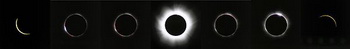
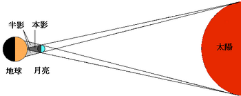
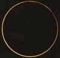
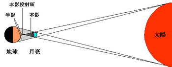
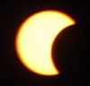

日蝕的種類與形成
日全蝕

太陽光球完全被月亮遮住，原本明亮的太陽圓盤被黑色的月球陰影遮蓋。日全蝕（包含全環蝕）
的研究價值遠高於其他幾種日蝕，因為能完全掩蓋光球的強光，觀測日全蝕時，
人們能直視色球層和日冕等太陽大氣，故觀測日全蝕是天文學家研究太陽大氣的大好時機。
形成原理：

當月球阻擋了太陽光，在地球上造成陰影，使某些地區不能接受到部份或全部陽光。
如觀測者在半影區內，他們會看到日偏蝕，而身處本影區的人則會看到日全蝕。
理論上日全蝕只在月球位於近地點時發生，此時月球的本影錐長度較月地之間距離長，本影錐才能掃到地球表面。
由於太陽的實際體積比月球大很多，所以日全蝕通常只能在地球上一塊非常小的區域見到，因為月亮的本影對太陽來說只是一個小點。
日環蝕

太陽邊緣的光球仍可見，形成一環繞在月球陰影周圍的亮環。
形成原理：

當月球處於遠地點時，月球的本影錐不能到達地球，到達地球的是由本影錐延長出的偽本影錐。
此時月球的視直徑略小於太陽，月亮不能完全把太陽遮蓋。在這個情況下，
身處本影投射區(偽本影)的人在最大掩蝕的階段仍會看到一圈太陽的光環，這便是日環蝕，
而位處半影區的觀測者則會看到日偏蝕。至於月球在近日點時，地球每一個角落就都只能觀測到日環蝕，
也就是太陽的半影區與本影區重疊。
日偏蝕

中國史書上稱「日有食之，不盡如勾」，觀測者會看見一部分的太陽被月球的陰影遮蓋，但另一部分仍繼續發光。
形成原理：
是因為觀測者落在月球的半影區中，太陽和月球只有部分重合，依據兩者中心的視距離遠近
（太陽被月球遮蓋的最大直徑）來衡量蝕的大小。通常日偏蝕是伴隨著其他蝕相發生，
如日全蝕或日環蝕或日全環蝕。但某些日蝕只可能是日偏蝕（不伴隨其他蝕相），
因為月球與地球的距離太遠，只有半影碰到地球表面。
全環蝕(又稱混合日蝕)
全環蝕非常罕見，當全環蝕發生時，隨著地月之間的相對運動，會先後出現環蝕→全蝕→環蝕。
當然，對於某一個具體的地點來說，在一次日蝕過程中是不會同時看到全蝕和環蝕的。
形成原理：
全環蝕只發生在地球表面與月球本影尖端非常接近，或月球與地球表面的距離和月本影的長度很接近的情形下，
這時不同地區會出現日偏蝕、日全蝕和日環蝕三種不同的日蝕。由於地球為球體之關係，而本影影錐接觸地球時為日全蝕（常為在蝕帶中間），在蝕帶兩端由於影錐未能接觸地球，致只能有偽本影到達地球之下，所看到的是日環蝕。
附註：
A.日全蝕和日環蝕在天文學中稱之為中心蝕，只要發生中心蝕，必然會發生日偏蝕。
B.另外月蝕有半影月蝕，但日蝕沒有半影日蝕。
|